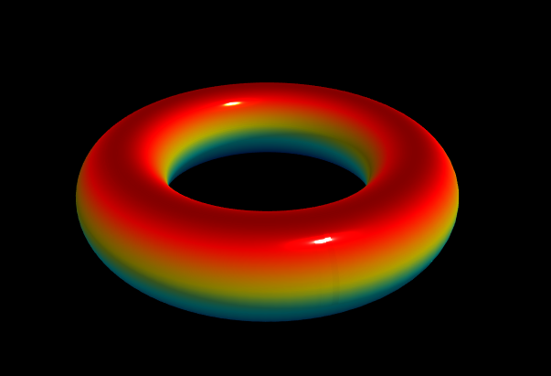

Custom Function from User
The true power of the ParametricSurfacesLib library lies in its ability to create 3D parametric surfaces using custom mathematical functions provided by the user. The custom function required by this library should have the following signature:
Vector3 CustomFunction(float u, float v); // CustomFunction(float, float)
In this demo, we will illustrate how to define a custom mathematical function and utilize it to generate a 3D parametric surface. The custom functions will have access to the same functionalities and features provided by the ParametricSurfacesLib library as the built-in functions, including vertex, UV, and colormap data, etc.
Set Up the Scene
Navigate to the Parametric Surfaces/Scenes folder and double-click on the scene called CustomFunction to open the demo.
In the Scene view window, you'll observe the custom-function surface with the default jet colormap displayed. In the Hierarchy window, there is only one GameObject named Surface. Clicking on Surface brings up its Inspector, allowing you to inspect the surface's properties. The material is specified using VertexColorMaterial. Additionally, the surface is attached to a C# script named CustomFunction.cs, which exposes several properties for manipulating the surface plot.
C# Script
let's examine the C# script file used in this demo. Navigate to the Parametric Surfaces/Scripts folder, double-click on the CustomFunction.cs file. Here is the code list for this file:
using UnityEngine;
using ParametricSurfacesLib;
using System;
[RequireComponent(typeof(MeshFilter))]
[ExecuteInEditMode]
[Serializable]
public class CustomFunction : MonoBehaviour
{
[Range(0.1f, 2f)]
public float RTorus = 1f;
[Range(0.1f, 2f)]
public float RRing = 0.3f;
Vector3 TorusFunction(float u, float v)
{
var x = (RTorus + RRing * Mathf.Cos(v)) * Mathf.Cos(u);
var y = RRing * Mathf.Sin(v);
var z = (RTorus + RRing * Mathf.Cos(v)) * Mathf.Sin(u);
return new Vector3(x, y, z);
}
public ColormapEnum Colormaps = ColormapEnum.jet;
public bool ColormapReverse = false;
public ColormapDirectionEnum ColormapDirection = ColormapDirectionEnum.Y;
public bool AutoRotation = true;
public bool AutoUpdate = true;
private Mesh mesh;
private ParametricSurfaceData psd;
private ParametricSurfaceData.VertexData data;
void Start()
{
psd = new ParametricSurfaceData();
mesh = new Mesh();
GetComponent<MeshFilter>().mesh = mesh;
CreateSurface();
}
void Update()
{
#if UNITY_EDITOR
if (!Application.isPlaying)
{
bool needsUpdate = mesh == null ||
UnityEditor.Selection.activeGameObject == gameObject;
if (needsUpdate)
{
CreateSurface();
var mf = GetComponent<MeshFilter>();
mf.sharedMesh = mesh;
}
}
#endif
if (Application.isPlaying)
{
if (AutoUpdate) CreateSurface();
if (AutoRotation) psd.RotateObject(transform);
}
}
void CreateSurface()
{
psd ??= new ParametricSurfaceData()
{
UMin = 0f,
UMax = 2f * Mathf.PI,
VMin = 0f,
VMax = 2f * Mathf.PI,
};
psd.ColormapName = Colormaps;
psd.ColormapReverse = ColormapReverse;
psd.ColormapDirection = ColormapDirection;
data = psd.CreateData(TorusFunction, 201, 201);
mesh.Clear();
mesh.vertices = data.Vertices;
mesh.colors = data.Colors;
mesh.triangles = data.Triangles;
mesh.RecalculateNormals();
}
}
Here, we define the custom function for a torus with the following code snippet:
Vector3 TorusFunction(float u, float v)
{
var x = (RTorus + RRing * Mathf.Cos(v)) * Mathf.Cos(u);
var y = RRing * Mathf.Sin(v);
var z = (RTorus + RRing * Mathf.Cos(v)) * Mathf.Sin(u);
return new Vector3(x, y, z);
}
Within the custom TorusFunction method, we utilize two public fields, RTorus and RRing, to control the appearance of the torus. These fields can be easily adjusted by the user from the Inspector. The method returns a 3D point of the Vector3 type on the torus surface.
Now, we can use this custom function inside the CreateSurface method in the same way as we did for the built-in functions implemented in the ParametricSurfacesLib library, but we need to specify the data range for the u and v variables used in our custom parametric function with the following code snippet:
psd ??= new ParametricSurfaceData()
{
UMin = 0f,
UMax = 2f * Mathf.PI,
VMin = 0f,
VMax = 2f * Mathf.PI,
};
Next, we pass our custom TorusFunction to the CreateData method to generate corresponding vertex data for the torus surface. The rest of the code for this demo is the same as that used in creating 3D parametric surfaces with the built-in mathematical functions.
Start Play Mode
let's begin the Play mode by clicking the Play button. You'll observe our custom Torus surface with the jet colormap, as shown in the following image:

By following the procedure described here, you can effortlessly create your own parametric surfaces by defining any parametric functions.